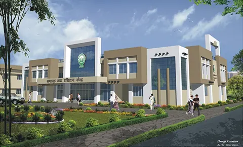

Public · Case study
A.P.M.C. Nagpur — godowns, a market shed and a training centre
Designs for the Agricultural Produce Market Committee at the Kalamna market yard, from bulk storage to a civic building with an auditorium.
Read the case study